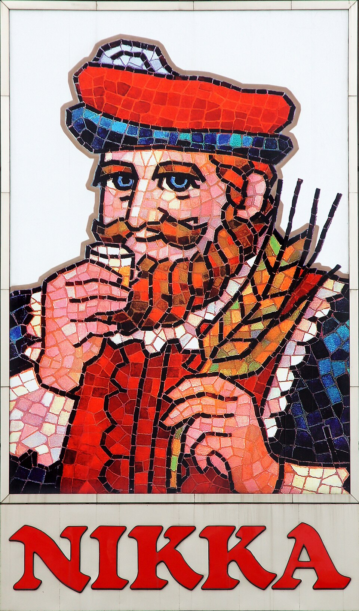

닛카 위스키 Nikka Whisky Distilling
닛카 위스키(Nikka Whisky Distilling)는 도쿄에 본사를 둔 일본의 위스키 및 기타 음료 생산 기업이다. 아사히 그룹 홀딩스가 소유하며 일본 위스키 증류소 두 곳을 운영한다.
최종 업데이트

닛카 위스키는 어떤 브랜드인가
닛카 위스키는 일본 위스키와 기타 음료를 생산하는 기업으로, 본사는 도쿄에 있으며 아사히 그룹 홀딩스가 소유한다. 일본 내에서 여러 증류소와 공장을 운영하며, 그중 일본 위스키 증류소는 홋카이도 요이치의 요이치 증류소와 미야기현 센다이 아오바구의 미야기쿄 증류소 두 곳이다.
스코틀랜드에서는 Ben Nevis Distillery도 소유하고 있다. 제품 폭이 넓어 일본 편의점에서 파는 Black Nikka부터 Nikka Single Cask까지 이어진다.
2008년에는 Yoichi 20 Year Old가 World Whiskies Awards에서 최고의 싱글 몰트로 뽑혔다. 닛카는 창업자 Masataka Taketsuru가 스코틀랜드와 비슷한 환경, 곧 서늘한 기후와 맑은 공기, 풍부한 수자원을 찾았다는 서사와 함께 논의되며, 요이치 증류소는 몰트 중심의 성격으로 소개된다.
닛카 위스키는 어떻게 시작되고 성장했나
창업자 Masataka Taketsuru는 1918년 스코틀랜드로 건너가 스카치 위스키 증류를 직접 배웠다. 글래스고 대학교에서 유기화학을, 캠벨타운의 Hazelburn 증류소에서 몰트 위스키 제조를 공부했다.
글래스고 의사의 딸 Jessie Roberta Cowan과 결혼해 1920년 함께 일본으로 돌아왔고, 1923년 Kotobukiya(현 Suntory)에 들어가 증류소 설립을 도운 뒤 1934년 닛카를 시작했다. 두 사람이 세상을 떠난 뒤에는 양자 Takeshi Taketsuru가 회사를 이끌며 사업을 크게 확장했다.
1954년부터는 아사히 그룹 홀딩스가 닛카를 소유해 왔다.
닛카 위스키의 브랜드 아이덴티티는 무엇인가
스코틀랜드에서 배운 증류 기술을 바탕으로 한 일본 위스키 생산자로, 편의점용 저가 제품부터 싱글 캐스크까지 폭넓게 만든다는 점이 특징이다.
닛카 위스키의 대표 제품과 서비스는 무엇인가
닛카는 700ml 한 병에 ¥900인 Black Nikka부터 750ml 한 병에 ¥15,750인 Nikka Single Cask까지 다양한 일본 위스키를 만든다. Black Nikka는 알코올 도수 37%의 위스키로, 일본 전역의 동네 가게에서 180, 300, 700, 1800, 1920, 2700, 4000mL 병으로 판매되며 소다나 물을 섞은 1회분 제품도 있다.
위스키 라인업에는 Yoichi Single Malt, Miyagikyo Single Malt, From The Barrel, Taketsuru Pure Malt, Coffey Malt, Coffey Grain, All Malt, Blended 등이 있다. 공장 구성은 두 증류소 외에 시드르·브랜디·와인을 다루는 히로사키 공장, 소주를 증류하는 모지 공장 등이 있으며, 스코틀랜드 Fort William의 Ben Nevis 증류소에서는 스카치 위스키를 생산한다.
닛카 위스키는 지금 어떤 상태인가
현재 아사히 그룹 홀딩스가 소유하며 본사는 도쿄에 있다. 일본에서는 요이치·미야기쿄 두 증류소와 히로사키, 도치기, 가시와, 니시노미야, 모지 공장을 운영하고, 스코틀랜드에는 1989년 인수한 Ben Nevis 증류소를 두고 있다.
요이치 증류소는 1934년, 미야기쿄 증류소는 1969년에 설립되었으며, 도치기 공장은 그레인 위스키 저장과 숙성을 맡는다.
닛카 위스키 로고는 어떻게 변해왔나
자주 묻는 질문
닛카 위스키는 어느 나라 브랜드인가요?
닛카 위스키는 일본의 식음료 브랜드입니다.
닛카 위스키는 언제 설립되었나요?
닛카 위스키는 1934년 설립되었습니다.
닛카 위스키의 브랜드 아이덴티티는 무엇인가요?
스코틀랜드에서 배운 증류 기술을 바탕으로 한 일본 위스키 생산자로, 편의점용 저가 제품부터 싱글 캐스크까지 폭넓게 만든다는 점이 특징이다.
닛카 위스키의 대표 제품은 무엇인가요?
닛카는 700ml 한 병에 ¥900인 Black Nikka부터 750ml 한 병에 ¥15,750인 Nikka Single Cask까지 다양한 일본 위스키를 만든다.
닛카 위스키는 어느 기업이 소유하고 있나요?
현재 아사히 그룹 홀딩스가 소유하며 본사는 도쿄에 있다.
닛카 위스키의 창업자는 누구인가요?
닛카 위스키의 창업자는 다케쓰루 마사타카입니다(위키데이터 기준).
닛카 위스키의 본사는 어디에 있나요?
닛카 위스키의 본사는 Minami-Aoyama에 있습니다(위키데이터 기준).
출처와 검증
닛카 위스키 관련 참고: 공식 웹사이트 · 위키데이터 Q3341523 · 한국어 위키백과 · 영어 위키백과. 브랜드명은 한글과 원어를 함께 표기하되 데이터에 없는 표기는 만들지 않습니다. 기원 국가·설립연도는 검수된 정의문에서 확인된 값을 우선하고, 없을 때만 공식 웹사이트 URL이 일치하는 위키데이터 개체의 값을 씁니다. 탄생일의 월·일은 위키데이터, 위키백과 정보상자, 본문 가운데 같은 연월로 확인되는 값만 싣고, 출처끼리 다르면 싣지 않습니다. 웹 첫 보관은 인터넷 아카이브가 공식 사이트 첫 화면을 처음 보관한 날로, 사이트 개설일과 다를 수 있습니다. 위키데이터 값은 2026-11-07 기준입니다.